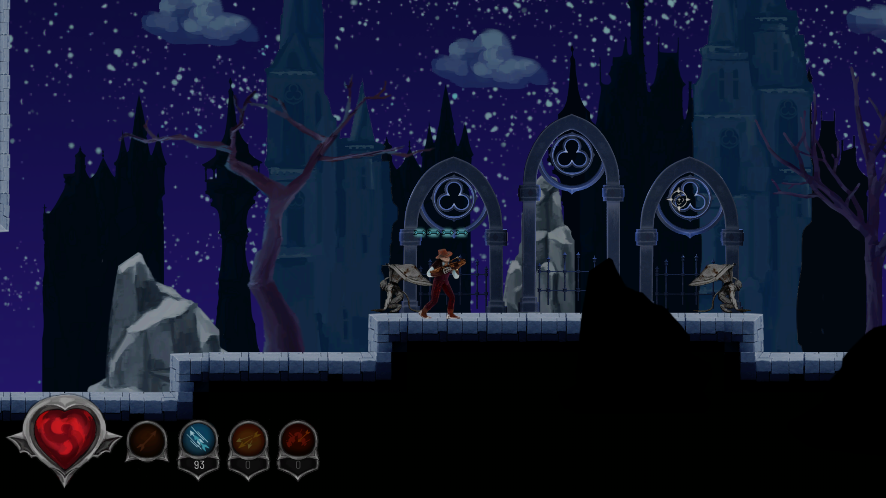

Team Project • The Game Assembly
Crimson Keep
A dark action platformer developed in a team at The Game Assembly. I mainly worked on HUD and several player-facing systems, including health, ammo, collectables, and destroyable tiles.
Gameplay Programmer
Team Project
HUD, Gameplay Feedback, Player Systems
TGA Engine / C++
What I Worked On
My main contribution was player-facing gameplay and feedback systems. I worked on the HUD, health and ammo presentation, collectables, destroyable tiles, and general gameplay-related implementation in TGE.
HUD
I worked on the HUD, including presentation of player health, ammo, and other gameplay-critical information. The goal was to make combat information readable and clear without distracting from the action.

Collectables
I worked on collectable-related gameplay elements that supported player interaction and moment-to-moment feedback. These systems helped make the game feel more responsive and rewarding.

Destroyable Tiles
I implemented or worked on destroyable tiles that made the environment feel more reactive to the player's actions. This added feedback, interaction, and helped reinforce the impact of combat.

Working in TGE
One of the most rewarding parts of the project was working in TGE, which was a completely new engine for me. It was fun to learn a new workflow, understand how the engine was structured, and implement gameplay systems inside that environment.

Additional Contributions
In addition to programming, I also contributed some voice acting and created sound effects for certain gameplay elements, including the arrow shots. These small additions helped support the overall feel and feedback of the game.